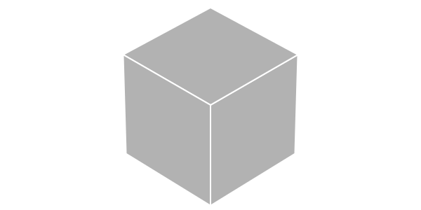
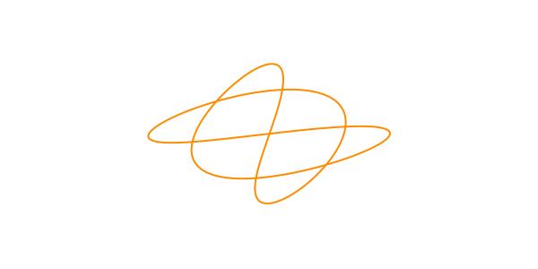
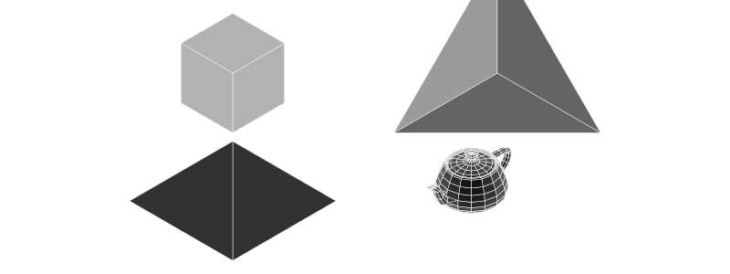
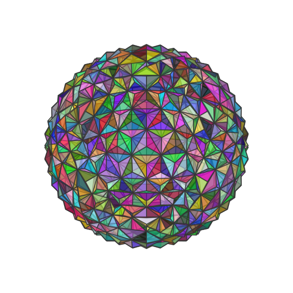
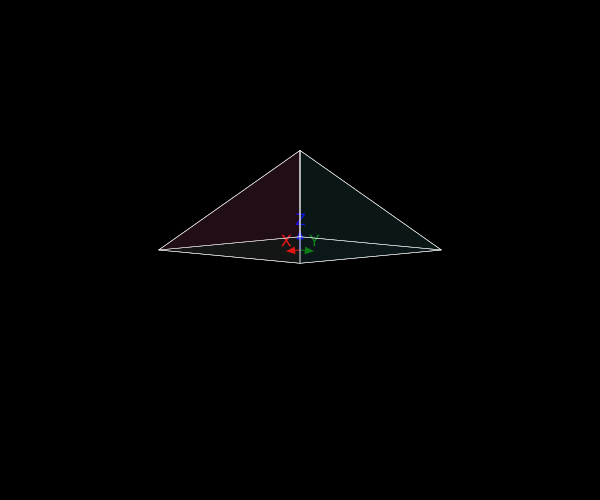
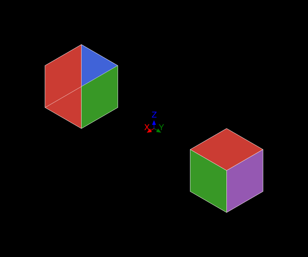

Objects
So far we've been drawing individual points and lines. This gets tiresome when you have a lot of them. Fortunately, Thebes has a few features for handling larger groups of points.
Making objects
You make an 3D object using make(), and then use pin() to throw it at the 2D canvas.
make() expects an array of 3D points, an (optional) array of face definitions, and an (optional) array of labels, plus an (optional) name. These arrays let you link faces with vertices. It returns an Object.
So after:
make(Cube, "cube")you'll get:
Object(
Point3D[
Point3D(-0.5, 0.5, -0.5),
Point3D(0.5, 0.5, -0.5),
Point3D(0.5, -0.5, -0.5),
Point3D(-0.5, -0.5, -0.5),
Point3D(-0.5, 0.5, 0.5),
Point3D(0.5, 0.5, 0.5),
Point3D(0.5, -0.5, 0.5),
Point3D(-0.5, -0.5, 0.5)
],
[[1, 2, 3, 4],
[2, 6, 7, 3],
[6, 5, 8, 7],
[5, 1, 4, 8],
[1, 5, 6, 2],
[4, 3, 7, 8]],
[1, 2, 3, 4, 5, 6],
"cube")The default rendering uses shades of grey.
eyepoint(10, 10, 10)
perspective(3000)
cube = make(Cube, "cube")
pin(cube)
Here's a very simple example of how you might make an object.
tol = 0.001
a = Point3D[]
for t in -2pi:tol:2pi
push!(a, Point3D((100 + cos(5t)) * cos(3t), (100 + cos(5t)) * sin(2t), sin(5t)))
end
sethue("darkorange")
knot = make([a, []], "knot")
pin(knot, gfunction = (args...) -> poly(args[1], :stroke))
The gfunction here receives the vertices, faces, and labels, but the faces and labels are empty, so this simple pin only needs to draw a polygon through the vertices.
It's obviously not something you'd want to do "by hand" very often. Fortunately there are plenty of people who are prepared to make 3D objects and distribute them in standard file formats, via the internet. Thebes knows about one of these formats, the .OFF file format. So there are a few objects already available for you to use directly.
Using objects
The following objects have already been loaded (from data/objects.jl) when Thebes starts:
Cube, Tetrahedron, Pyramid, AxesWire, Carpet
t = Tiler(600, 300, 1, 5)
for (n, o) in enumerate([Cube, Tetrahedron, Pyramid, AxesWire, Carpet])
@layer begin
translate(first.(t)[n])
object = make(o, string(o))
setscale!(object, 10, 10, 10)
pin(object)
end
end
You can load a few more objects by including the moreobjects.jl file:
include("data/moreobjects.jl")I quite like the occasional geodesic:
include(dirname(pathof(Thebes)) * "/../data/moreobjects.jl")
eyepoint(150, 150, 150)
setopacity(0.7)
object = make(geodesic, "geodesic")
pin(setscale!(object, 200, 200, 200), gfunction = (args...) -> begin
vertices, faces, labels = args
setlinejoin("bevel")
if !isempty(faces)
@layer begin
for (n, p) in enumerate(faces)
randomhue()
poly(p, :fillpreserve, close=true)
sethue("grey20")
strokepath()
end
end
end
end)
Rendering objects
To render an object, there are many choices you can make about how to draw the faces and the vertices. Again, you do this with a gfunction. For objects, the gfunction will be more complex than for points and lines. It takes lists of vertices, faces, labels, and colors. Here's a generic example:
function mygfunction(vertices, faces, labels; action=:fill)
cols = [Luxor.julia_green, Luxor.julia_red, Luxor.julia_purple, Luxor.julia_blue]
if !isempty(faces)
@layer begin
for (n, p) in enumerate(faces)
@layer begin
setopacity(0.1)
sethue(cols[mod1(n, end)])
poly(p, close = true, action)
end
sethue("white")
setline(0.5)
poly(p, :stroke, close=true)
end
end
end
end
background("black")
origin()
setlinejoin("bevel")
eyepoint(Point3D(150, 150, 20))
axes3D(20)
object = make(Pyramid, "Pyramid")
setscale!(object, 100, 100, 100)
pin(object, gfunction = mygfunction)
Faces
The faces are drawn in the order in which they were defined. But to be a realistic 3D drawing, the faces should be drawn so that the ones nearest the viewer are drawn last, hiding the ones that can't be seen.
This is why Thebes is more of a wireframe tool than any kind of genuine 3D application. Use Makie.jl. Or program Blender with Julia.
In theory it's possible to do some quick calculations on an object to sort the faces into the correct order for a particular viewpoint. The sortfaces!() function tries to do that. For simple objects you could probably get by.
function mygfunction(vertices, faces, labels; action=:fill)
cols = [Luxor.julia_green, Luxor.julia_red, Luxor.julia_purple, Luxor.julia_blue]
if !isempty(faces)
@layer begin
for (n, p) in enumerate(faces)
@layer begin
sethue(cols[mod1(n, end)])
poly(p, close = true, action)
end
sethue("white")
setline(0.5)
poly(p, :stroke, close=true)
end
end
end
end
background("black")
origin()
setlinejoin("bevel")
eyepoint(Point3D(150, 150, 150))
perspective(0)
axes3D(20)
t = Tiler(600, 600, 1, 2)
object = make(Cube, "cube")
setscale!(object, 100, 100, 100)
setposition!(object, Point3D(0, -200, 0))
pin(object, gfunction = mygfunction)
setposition!(object, Point3D(0, 400, 0))
sortfaces!(object, eyepoint=eyepoint())
pin(object, gfunction = mygfunction)